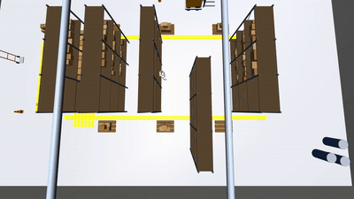
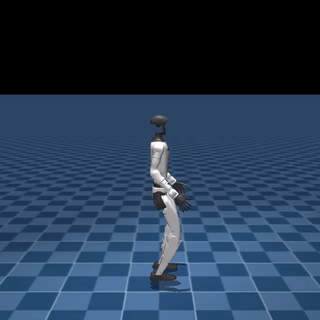
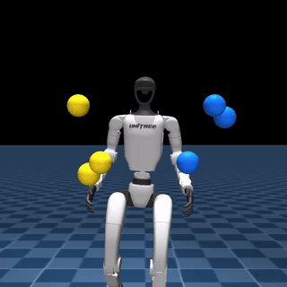
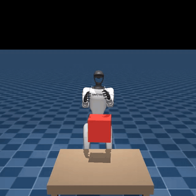
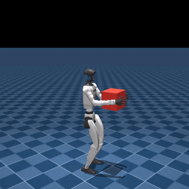
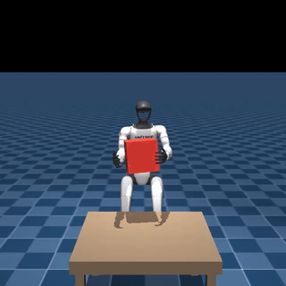
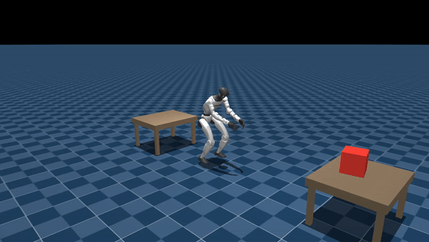

Warehouse loop
Three-box pickup & delivery loop between shelves using the same FSM controller on the galpao scene.
loading robot…
The pipeline
Each stage is a policy warm-started from the previous one's terminal-state buffer. A finite state machine snaps them together into a continuous demonstration dataset that trains the final student.

Flat-terrain velocity-tracking locomotion. Foundation stage; its terminal buffer warm-starts every downstream task.
unitree-g1-humanoid-walk
Standing bimanual reach to sampled 3D targets. RMA teacher-student distills a privileged teacher into a proprioception-only student.
unitree-g1-humanoid-reach
Walks to a table, plants its feet, and grasps a rigid box symmetrically with both hands. Shape-filtered load + progressive unfreezing (Howard & Ruder, 2018).
unitree-g1-humanoid-pick
Walk-while-carrying with rigid, sloshing, and soft payloads. Sagittal-plane mirror augmentation in a body-yaw frame keeps the mirrored transitions physically consistent.
unitree-g1-humanoid-carry
Sets the carried box down on a target surface. Broad-above / narrow-below tracking kernel on the box z-axis for controlled descent.
unitree-g1-humanoid-place
Finite-state machine seeds each phase with the previous phase's terminal state and records a unified dataset (obs, action, phase) for downstream BC.
Beyond the chain

Three-box pickup & delivery loop between shelves using the same FSM controller on the galpao scene.
Single MLP covering walk and pick phases, phase-conditioned via a 4-dim one-hot. Trained via BC on the FSM dataset, then BeyondMimic-style PPO fine-tune.
unitree-g1-humanoid-monolithic-policyLoco-manipulation on the Unitree G1: curriculum design, data-generation FSM, and a monolithic student policy. Supervised at Instituto Tecnológico de Aeronáutica.
About
I'm an electronics engineer and a computer science master's student at Instituto Tecnológico de Aeronáutica. My work is deep reinforcement learning for robotic control. Reward design, curriculum, and the pipeline that turns raw simulation into reusable skills.
Open-source by default. Based in São José dos Campos, Brazil.